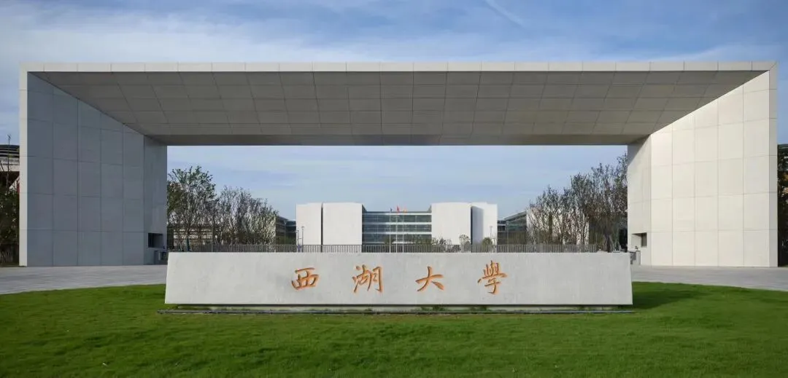

西湖大学曾坚阳人工智能与计算生物学课题组招聘| 博士生、实习生
原文：https://mp.weixin.qq.com/s?__biz=MzAwMzIzOTk5OQ==&mid=2247501684&idx=1&sn=f0406e9f4afc4d0529f05982f5245383&chksm=9b3cbe24ac4b3732098c3a87f3682aaae1c8fa6c6d1882d1d91583034b70bde253ac08df5bce#rd 合集：求职/求学/招聘
西湖大学拥有优秀的科研环境和氛围，在这里你可以和聪明有创造力的小伙伴们一起工作和成长。如果你喜欢做科研，有突破前沿科技的野心，我们邀请你加入，一起创造一个美好的世界。


一、课题组介绍
课题组负责人：曾坚阳教授（主页：https://www.westlake.edu.cn/faculty/jianyang-zeng.html）是国家杰出青年科学基金入选者 ，于2012年12月至2023年7月在清华大学交叉信息研究院（姚班） 担任助理教授、长聘制终身副教授，于2023年7月起作为终身正教授加入西湖大学工学院（生命科学学院兼聘） 。他于1999年和2002年分别获得浙江大学的学士和硕士学位。2011年，在美国杜克大学(Duke University)获得计算机科学博士学位。2011年至2012年期间，在杜克大学计算机科学系和杜克医学院从事博士后研究。共发表学术论文80余篇，其中通讯作者论文包括 Nature Machine Intelligence、Nature Communications、 Nature Computational Science、PNAS、Cell Systems、Nucleic Acids Research、 STTT、Protein & Cell、PLOS Computational Biology、Bioinformatics等。成果获得ESI高引论文、“吴文俊人工智能自然科学”三等奖、“中国生物信息学十大进展”、 “中国生物信息学十大算法和工具”、世界人工智能大会青年优秀论文、国际会议ICIBM 2019最佳论文等荣誉。担任国际期刊IEEE/ACM Transactions on Computational Biology and Bioinformatics的编委、计算生物学领域的国际顶级会议ISMB、RECOMB程序委员会委员。
课题组长期致力于人工智能和生命医学的交叉学科研究，未来科研方向围绕AI for Life Sciences展开，包括：
（1） 高通量实验方法开发、多组学测序方法开发；（2） 基于生物大数据（如单细胞组学数据）的人工智能/机器学习模型开发（3） AI驱动的新型治疗方法开发和生物学知识发现等，例如蛋白质结构设计、药物发现等方向。二、课题组成员基本要求
●1、对科研有足够的热情、足够的上进心及抗压能力；
●2、对交叉领域有浓厚兴趣，愿意独立思考，渴望做出有影响力的科研成果；
●3、为人诚实守信，有良好的沟通能力和团队协作精神；
●4、良好的英文听说读写能力；
●5、扎实的编程基础，熟练掌握python语言和PyTorch等深度学习编程框架。
三、岗位及申请要求
（一）、博士生申请（2024Fall PHD 有足够的名额，面向应届推免生以及硕士毕业生）
博士生要求：
●1、本科就读于国内外一流高校且本科课业成绩或科研成果拔尖，专业涉及到计算机编程（如计算机科学与技术、网络安全、软件工程、生物信息学、电子信息、生物医学工程等均可）；
●2、英语要求6级480+或雅思6.0+或托福90+；
●3、熟悉python语言和pytorch框架，对图深度学习、自然语言处理模型、大模型训练、Transformer等深度学习技术有一定的基础（上述领域熟悉一个即可申请）、有AI顶会/顶刊相关的投稿经验者优先。
●4、加分项：对交叉学科（生物信息学、基因组学、蛋白质结构设计、药物发现）有一定了解和领域知识的优先；
岗位说明：
●1、西湖大学与浙江大学计算机专业联合培养，毕业证、学位证均为浙江大学计算机专业。实验室学生本科多来自国内985高校的top学生，且多位学生专业成绩排名前列或在本科就已经发表优秀论文。 西湖大学提供国内一流的生活条件。实验室学术研究氛围浓厚，无硬性出勤要求，无科研之外的工程性任务或行政事务。
●2、采取申请考核制；发浙江大学计算机专业学位证、毕业证；每年 9 月、12 月、和第二年 3 月有多次招生面试。申请细节请参考： https://www.westlake.edu.cn/admissions_aid/graduate/
（2023.7月西湖大学夏令营已结束，本组仍有大量充足名额，可填报预推免或第二轮、第三轮博士招生，大概在8月学院会发布通知，请关注上方学院网址）
（二）、科研助理，实习生（面向大二、大三同学） 我们长期招收实习生，只要你对交叉领域有足够的研究热情，并有基本的深度学习基础。要求实习三个月以上，可远程。可以以来本组读博为目的，也可以提高自己，发表高水平论文为目的。曾老师在清华大学曾经指导多名姚班本科生在半年~1年内发表Nature子刊论文。本组无论是本科生还是研究生出路都非常好，例如：在佐治亚理工大学担任助理教授，在微软亚洲研究院（MSRA）担任研究员，在佛罗里达大学担任助理教授等等。****
四、工作待遇及我们的优势
通过选拔入围的学生将在我们的实验室获得稳定的工作环境和顶级的研究设施，同时我们会根据他们的兴趣和需求提供个人职业发展的支持：
●1、 纯粹的研究环境：实验室遵守国际一流实验室的研究模式，目标是发表影响力高的学术论文（例如Nature子刊等）。
●2、充实的科研指导
如果选拔学生来自其它领域（如应用数学、统计学等和本组研究课题十分相关的专业），或正处于研究开始阶段，但对交叉学科有足够的热情和兴趣，且有上进心和自学能力，将由团队中经验丰富的学长姐提供具体的科研指导，在最初阶段辅导他们入门。
如果选拔学生在深度学习/交叉领域有一定的基础，他们将在与老师讨论后，基于共同兴趣来确定研究方向，并与组内其他同学合作完成项目。
●3、科研交流与合作：我们鼓励实验室内的成员以及与国内外学术团队（包括高等学校和企业）进行多角度的科研交流与合作。
●4、丰富的计算资源：西湖大学拥有强大的计算中心，能够提供如A100等高性能的计算卡。
●5、对于表现杰出的同学，我们课题组将会提供支持他们进一步深造或就业的机会。
本组团队成员上进心十足，团结一致，学术氛围浓厚，师兄师姐均能为新进组同学提供帮助。此外，本组近些年每年均有高质量论文产出，且获得国内外媒体报道，在生物信息学领域深耕多年，有非常丰富的经验，欢迎优秀的同学发邮件申请。
五、应聘方式
请将以下材料以一个压缩包（包内文件格式为PDF）形式发送至zengjy@westlake.edu.cn邮箱 ，并抄送lishuya13@tsinghua.org.cn。邮件标题请注明：“应聘[岗位名称]-[学校专业]-[所在年级]-[申请者姓名]” （如：应聘博士生-清华大学计算机系-2020本科-张三），压缩文件包也请按照此模式命名，对于符合要求并通过初审者，我们将会邮件通知安排面试。如有任何其他问题（包括组内氛围，目前方向等），欢迎邮件咨询组内学生（lishuya13@tsinghua.org.cn, 请同样附上自我介绍材料）。招聘启事在岗位招满前有效。
●1、个人简历；
●2、代表性成果（如已发表/在投学术论文、项目报告、获奖证书、本科期间成绩单/排名、英语成绩、GitHub主页等能证明申请者科研学习能力的材料）。
 往期回顾
往期回顾
歪!?来"Biomamba 生信基地"兼职？************
荷兰马斯特里赫特大学Judith教授招收2023年生物信息学方向博士生求学| 寻找一个生信博导
Ulf’s Computational Biomedicine Lab 博士招聘启示
求学| 寻找一个肠道微生物或系统生物学的博导
南方科技大学第一附属医院刘利平课题组诚聘博士后中南大学湘雅医院李津臣课题组诚聘生物信息学相关多学科交叉人才福州大学医工交叉研究院徐贻佺课题组招生启事
带你们做了那么久的单细胞，也带你们找找工作
浙大医学院生物信息学 博士招生 调剂信息浙江大学招聘博士后&科研助理
加州大学洛杉矶分校招聘[staff scientists in computational biology]
毛华伟教授课题组科研博后/科研助理
赵慧英课题组科研助理招聘启事
 您点的每个赞，我都认真当成了喜欢
您点的每个赞，我都认真当成了喜欢